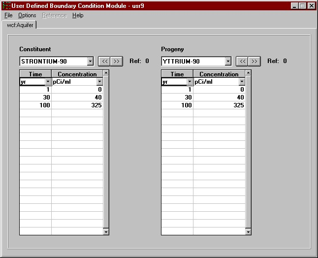

Use this module only if you know the constituent concentrations in the water body. The constituent concentrations at user provided points in time are entered directly through the interface. This module does not compute the ingrowth of progeny because the user is assumed to know everything about the source, including progeny concentrations. Therefore, this module assumes that the progeny emissions will be input along with the parent concentrations.
The concentrations are a spacial average throughout the volume of water. The concentrations are in pCi/ml or g/ml depending whether the constituent is a radionuclide or chemical. These concentration values are the instantaneous values at that time not an average. There are NO limits on number of constituents, progeny, or time/concentrations pairs.
For more information about the file specification that this module produces see the WCF Specifications on the FRAMES web site.
WCF Boundary Condition Parameters
Constituent
The list of constituents is identified by a 'Constituent' database module. Each of the constituents selected for analysis in the 'Constituent' module appears in this drop-down box. Use the drop down-box or the « » buttons to make differeent constituent selections. As a new selection is made the spreadsheet closest to the drop-down box is updated with the appropriate time series. If the selected constituent has progeny and if the "Include Progeny" option is checked under the "Options" menu, then an identical set of controls will appear to the left of the parent. The progeny will be displayed as the parent is displayed but only those progeny that relate to the displayed parent are available for data entry.
Time
Units: yr (years)
Range: Greater than or equal to 0.
A minimum of two times must be entered. Times must be entered in chronological, ascending order (i.e., 0, 5, 10 not 0, 10, 5). The spreadsheet rows must be used consecutively. Anything below a skipped time row will be deleted. A point in time at which a measurement/estimate is given should be relative to all other times entered in the interface and the overall simulation.
Concentration
Units: g/ml (grams constituent per milliliter water) or pCi/ml (picocuries constituent per milliliter water)
Range: Greater than or equal to 0.
Enter the constituent concentrations in water over time. Items left blank in rows that have a valid time defined are filled with zeros. All rows after and including the first row with an invalid time are ignored and cleared.

Fig: Constituent